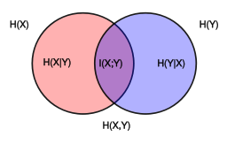

用一棵树来表示数据的分类或回归规则。每个节点表示一个属性的判别，每个分支表示判别的结果，每个叶节点表示一个类别或一个数值。决策树的生成过程是不断地选择最优的属性来划分数据集，使得每个子集的纯度越来越高。
或者说，决策树是在不断的按照某个属性，把训练样本细分为多个子集，直到已经只含有某一类的样本。
决策树的纯度可以用信息熵或基尼系数等指标来度量，它们反映了数据集合中不同类别的混乱程度。
选择最优的划分属性
随着不断划分，我们希望决策树的结点纯度越来越高。
信息熵，可以表征随机变量分布的混乱程度，某个事件发生不确定度越大，熵越大，随机变量 X 中 i 事件发生可能性为 pi，（或者说，样本集 X 中 i 类样本所占比例为 pi），信息熵定义为：
Ent(X)=−i=1∑Npilog2pi
熵的计算只与事件概率有关，与值无关，且约定p=0时plogp=0

条件信息熵，已知X的条件下随机变量Y的不确定性。
Ent(Y∣X)=−x∈X∑P(x)logEnt(Y∣X=x)=−x∈X∑P(x)y∈Y∑P(y∣x)logp(y∣x)=−x∈X,y∈Y∑P(x,y)logP(y∣x)=x∈X,y∈Y∑P(x,y)logp(x,y)p(x)
联合信息熵：
Ent(X,Y)=Ent(X,Y)−Ent(X)
互信息度量了两个变量之间相互依赖的程度
I(X;Y)=y∈Y,x∈X∑p(x,y)log(p(x)p(y)p(x,y))
信息增益表示在一个条件下，信息不确定性减少的程度（按某个特征划分数据集获得的增益）：
Gain(X,Y)=H(Y)−H(Y∣X)
信息增益越大，意味着使用属性Y来进行划分所得的纯度提升越大，以此来选择最优划分属性。
若将数据序号这类作为条件，则不会有任何不确定性，但是这个条件是没有意义的，信息增益率在信息增益的基础上增加了惩罚项。
GainRate(X,Y)=H(Y)Gain(X,Y)
基尼指数（基尼不纯度）
与信息熵一样表征事件不确定性， 或者说，从数据集中随机抽取两个样本，其类别不一致的概率
Gini(X)=x∈X∑P(x)(1−P(x))=1−x∈X∑P(x)2
条件基尼指数，表示在属性 X 的取值已知的条件下，数据集 Y 按照属性 X 的所有可能取值划分后的纯度：
Gini(Y∣X=x)=P(Y∣X=x)Gini(Y∣X=x)+(1−P(Y∣X=x))Gini(Y∣X=x)
基尼指数也可以视为信息熵的近似，信息熵的泰勒展开第一项就是基尼指数。
剪枝 Pruning
是一种防止过拟合的方法，它可以通过删除不必要的子树或节点来降低决策树的复杂度，提高泛化能力。
- 预剪枝是在生成决策树的过程中，根据一些条件（如最小节点样本数、最大深度、信息增益、精度等）来判断是否继续划分
- 后剪枝是在生成完整的决策树后，从下往上检查每个子树是否对模型有贡献，如果没有或很小，就将其替换为叶节点或删除。